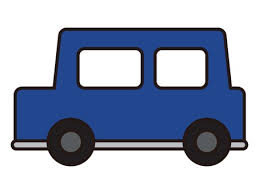

Lab 5 - Data Types and Variables
Challenge
The biggest challenge I had with this lab was getting all my formatting correct in the js file and also getting my css to work for some reason.
Problems
The main problem that arose for me when doing this lab was getting my css to work properly, so I tried looking back at past labs and that helped.
Reflection
Overall I think this assignment went well for me, I was able to get it done in a timely manner and I'm happy with my final product and my effort.